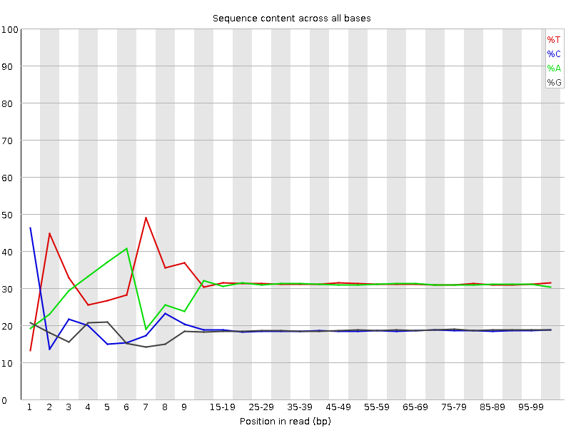

![[OK]](Icons/tick.png) Basic Statistics
Basic Statistics
| Measure | Value |
|---|---|
| Filename | c1_2.fq |
| File type | Conventional base calls |
| Encoding | Sanger / Illumina 1.9 |
| Total Sequences | 30689062 |
| Filtered Sequences | 0 |
| Sequence length | 100 |
| %GC | 37 |
Per base sequence quality
Per sequence quality scores
![[FAIL]](Icons/error.png) Per base sequence content
Per base sequence content

Per base GC content
Per sequence GC content
Per base N content

Sequence Length Distribution
Sequence Duplication Levels
![[WARN]](Icons/warning.png) Overrepresented sequences
Overrepresented sequences
| Sequence | Count | Percentage | Possible Source |
|---|---|---|---|
| CTAATTTTCATCTTAATTCAACATCGAGGTCGCAAACATCTTTATCTATA | 89398 | 0.2913024842531844 | No Hit |
| CTTTCGTACAATTAATTAATATTTTATTATAGATAGAAACCAATCTGACT | 61586 | 0.20067736185615578 | No Hit |
| CTTTGTACAGTCAACATACTGCAGCTATTTAAAATAATTCATTGAGCAGA | 32992 | 0.10750410032082441 | No Hit |
Kmer Content
| Sequence | Count | Obs/Exp Overall | Obs/Exp Max | Max Obs/Exp Position |
|---|---|---|---|---|
| CGAGG | 2600280 | 2.3111687 | 5.9073234 | 1 |
| AAAAA | 19186755 | 2.282923 | 5.2760363 | 2 |
| CGCCG | 1512090 | 2.1632655 | 6.266487 | 1 |
| CGGCG | 1411105 | 2.049867 | 5.6877384 | 1 |
| CGACG | 2330595 | 2.0400658 | 8.291062 | 1 |
| CGCGG | 1321485 | 1.9196788 | 6.200981 | 1 |
| CGCGA | 1950665 | 1.7074975 | 6.1122503 | 1 |
| CTCGA | 3243780 | 1.6881424 | 9.699214 | 1 |
| CGCGC | 1152265 | 1.6484835 | 5.500698 | 1 |
| CGATC | 3110310 | 1.6186816 | 5.3004465 | 4 |
| CTTCT | 5276480 | 1.6108375 | 5.426196 | 1 |
| ATCGA | 4967270 | 1.5816875 | 5.043507 | 6 |
| CTTCC | 3080470 | 1.5577935 | 5.6844583 | 1 |
| CTGGA | 2926270 | 1.5463445 | 7.0691586 | 1 |
| CGCCA | 1773635 | 1.529 | 5.6538477 | 1 |
| CGAGA | 2848035 | 1.5253443 | 5.450047 | 1 |
| CAAAA | 7746670 | 1.506467 | 5.133032 | 1 |
| CTCCA | 2866110 | 1.4689819 | 8.031271 | 1 |
| CTTTC | 4807840 | 1.4677681 | 7.529925 | 1 |
| CGAAG | 2720650 | 1.4571196 | 5.3704276 | 1 |
| CTCGC | 1711415 | 1.4556866 | 7.1237288 | 1 |
| CTTCG | 2827495 | 1.4518739 | 7.257515 | 1 |
| CTTTT | 7868845 | 1.4502167 | 6.8329396 | 1 |
| CTCGG | 1646260 | 1.4218216 | 8.972115 | 1 |
| CTCGT | 2746660 | 1.4103664 | 7.8904996 | 1 |
| TTTCA | 7536575 | 1.4077536 | 5.0600348 | 6 |
| TCATC | 4503305 | 1.3933798 | 5.444208 | 8 |
| CTGGC | 1589590 | 1.3728777 | 5.84857 | 1 |
| CTCCT | 2627835 | 1.328896 | 5.4552636 | 1 |
| CTTCA | 4210185 | 1.3026845 | 5.9023137 | 1 |
| CGAAA | 3967680 | 1.2804724 | 5.7251053 | 1 |
| CTTGG | 2380180 | 1.2409977 | 6.862395 | 1 |
| CTTTG | 3837120 | 1.1894519 | 6.5328155 | 1 |
| CTTGA | 3591160 | 1.1282542 | 5.5497684 | 1 |
| CTCCG | 1129650 | 0.9608519 | 5.205265 | 1 |